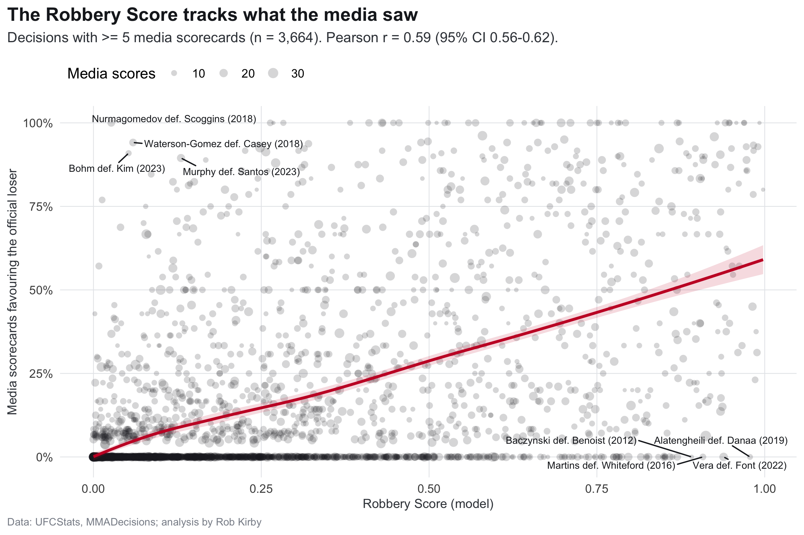

Show code
plot_media_scatter(ri, md, fx("media_r"), fx("media_r_lo"), fx("media_r_hi"))
Does the Robbery Score agree with people who watched the fights?
A score is only useful if it lines up with independent evidence. The main test uses media scorecards: journalists who scored the same fights round by round and published their cards on MMADecisions. The model never sees them.

Across 3,664 decisions with at least 5 media scorecards, the Robbery Score correlates with the share of media scoring the fight for the official loser at r = 0.59 (95% bootstrap CI 0.56–0.62; Spearman 0.60).
tibble::tibble(
Comparison = c("Official result vs. media majority", "Stats model's favourite vs. media majority",
"Stats model's favourite vs. official result"),
Agreement = c(fx("official_agrees_media"), fx("model_agrees_media"), fx("model_agrees_official"))) |>
gt() |> fmt_percent(Agreement, decimals = 1) |>
tab_header(title = "Who agrees with whom?", subtitle = "Decisions with a clear media majority")| Who agrees with whom? | |
| Decisions with a clear media majority | |
| Comparison | Agreement |
|---|---|
| Official result vs. media majority | 89.8% |
| Stats model's favourite vs. media majority | 87.7% |
| Stats model's favourite vs. official result | 85.9% |
The statistics-only model agrees with the media almost as often as the judges do.
These cases are interesting in their own right. They are not accusations, and some may reflect stat-recording errors.
show_md <- function(type_, title_) {
md |> filter(type == type_) |> head(10) |>
transmute(Date = date, Bout = fight_label(winner_name, loser_name), Decision = decision_type,
`Robbery Score` = robbery_score, `Media for loser` = paste0(media_for_loser, " of ", media_scored)) |>
gt() |> fmt_date(Date, date_style = "yMMMd") |> fmt_number(`Robbery Score`, decimals = 3) |>
tab_header(title = title_) |> opt_row_striping()
}
show_md("model_not_media", "The stats favour the loser, but the media sided with the winner")| The stats favour the loser, but the media sided with the winner | ||||
| Date | Bout | Decision | Robbery Score | Media for loser |
|---|---|---|---|---|
| Aug 31, 2019 | Alatengheili def. Batgerel Danaa | Unanimous | 0.978 | 0 of 10 |
| Apr 30, 2022 | Marlon Vera def. Rob Font | Unanimous | 0.939 | 0 of 21 |
| Apr 10, 2016 | Lucas Martins def. Robert Whiteford | Split | 0.908 | 0 of 13 |
| Jun 8, 2012 | Seth Baczynski def. Lance Benoist | Split | 0.891 | 0 of 6 |
| Jun 13, 2015 | Yair Rodriguez def. Charles Rosa | Split | 0.870 | 0 of 16 |
| Aug 8, 2015 | Jared Rosholt def. Timothy Johnson | Unanimous | 0.862 | 0 of 11 |
| Mar 29, 2025 | Brandon Moreno def. Steve Erceg | Unanimous | 0.858 | 0 of 16 |
| Jul 16, 2017 | Jack Marshman def. Ryan Janes | Unanimous | 0.852 | 0 of 12 |
| Jul 19, 2025 | Daniel Rodriguez def. Kevin Holland | Unanimous | 0.850 | 0 of 21 |
| Dec 4, 2021 | Bryan Barberena def. Darian Weeks | Unanimous | 0.850 | 0 of 13 |
These are the clearest cases of what statistics can’t see: damage, power, or which strikes really landed clean. When nearly every media member agrees with the judges against the counts, the counts are likely missing something.
| The media favoured the loser, but the stats backed the winner | ||||
| Date | Bout | Decision | Robbery Score | Media for loser |
|---|---|---|---|---|
| Jul 14, 2018 | Said Nurmagomedov def. Justin Scoggins | Split | 0.026 | 17 of 17 |
| Apr 14, 2018 | Michelle Waterson-Gomez def. Cortney Casey | Split | 0.059 | 16 of 17 |
| May 13, 2023 | Mandy Bohm def. Ji Yeon Kim | Split | 0.052 | 10 of 11 |
| Mar 18, 2023 | Lerone Murphy def. Gabriel Santos | Split | 0.130 | 17 of 19 |
| Jun 21, 2025 | Curtis Blaydes def. Rizvan Kuniev | Split | 0.086 | 11 of 13 |
| Jun 7, 2025 | Waldo Cortes Acosta def. Serghei Spivac | Unanimous | 0.013 | 10 of 13 |
| Feb 8, 2020 | Andre Ewell def. Jonathan Martinez | Split | 0.263 | 13 of 13 |
| Jun 11, 2011 | Darren Elkins def. Michihiro Omigawa | Unanimous | 0.268 | 5 of 5 |
| Oct 10, 2026 | Loopy Godinez def. Ketlen Souza | Unanimous | 0.167 | 8 of 9 |
| May 31, 2014 | Sean Strickland def. Luke Barnatt | Split | 0.283 | 11 of 11 |
In these fights the media saw the loser winning even though the counted stats favoured the winner. Possible reasons include pressure, effective aggression, the quality of strikes, or occasionally an error in the recorded statistics.
Worth a manual check: in Said Nurmagomedov vs. Justin Scoggins (2018), UFCStats records Nurmagomedov out-landing Scoggins 65–32 in significant strikes, yet every media scorecard had Scoggins winning. A disagreement that stark may point to a recording issue in the strike counts rather than a judging question.
Media members publish whole-fight scores rather than round-by-round scores, so round-level agreement can only be measured against the judges.
tibble::tibble(
Comparison = c("Model's round winner vs. the judges' majority", "… rounds the judges scored unanimously",
"… rounds the judges split", "Model vs. an individual judge",
"Benchmark: one judge vs. the other two (when those two agree)",
"Model vs. the other two judges (when they agree)"),
Agreement = c(fx("round_vs_majority"), fx("round_vs_majority_unan"), fx("round_vs_majority_split"),
fx("round_vs_individual"), fx("judge_vs_other_two"), fx("model_vs_other_two"))) |>
gt() |> fmt_percent(Agreement, decimals = 1) |>
tab_header(title = "How often the model picks the judges' round winner",
subtitle = paste0(cm(fx("round_rounds")), " rounds scored by three judges; out-of-fold predictions"))| How often the model picks the judges' round winner | |
| 10,870 rounds scored by three judges; out-of-fold predictions | |
| Comparison | Agreement |
|---|---|
| Model's round winner vs. the judges' majority | 84.7% |
| … rounds the judges scored unanimously | 91.1% |
| … rounds the judges split | 62.1% |
| Model vs. an individual judge | 82.9% |
| Benchmark: one judge vs. the other two (when those two agree) | 91.4% |
| Model vs. the other two judges (when they agree) | 88.6% |
The model comes close to, but falls a little below, how well one judge matches two others.
A sanity check: decisions that were widely argued about at the time should mostly score high. (This list is hand-picked from general knowledge and is never used by the model.)
fv |> arrange(desc(robbery_score)) |>
transmute(Bout = fight_label(winner_name, loser_name), Year = format(date, "%Y"), Decision = decision_type,
`Robbery Score` = robbery_score, Tier = tier, `Rank (of all decisions)` = rank,
`Media for loser` = media_loser_share, `Media n` = media_scored) |>
gt() |> fmt_number(`Robbery Score`, decimals = 3) |> fmt_percent(`Media for loser`, decimals = 0) |>
opt_row_striping()| Bout | Year | Decision | Robbery Score | Tier | Rank (of all decisions) | Media for loser | Media n |
|---|---|---|---|---|---|---|---|
| Igor Pokrajac def. Fabio Maldonado | 2012 | Unanimous | 0.998 | Robbery | 1 | 80% | 5 |
| Leonard Garcia def. Nam Phan | 2010 | Split | 0.992 | Robbery | 2 | 100% | 5 |
| Al Iaquinta def. Jorge Masvidal | 2015 | Split | 0.973 | Robbery | 15 | 86% | 14 |
| Lyoto Machida def. Mauricio Rua | 2009 | Unanimous | 0.958 | Robbery | 25 | 100% | 5 |
| Diego Sanchez def. Ross Pearson | 2014 | Split | 0.947 | Robbery | 33 | 100% | 14 |
| Michael Bisping def. Matt Hamill | 2007 | Split | 0.932 | Robbery | 49 | 0% | 2 |
| Benson Henderson def. Frankie Edgar | 2012 | Split | 0.788 | Robbery | 176 | 78% | 9 |
| Jon Jones def. Dominick Reyes | 2020 | Unanimous | 0.662 | Questionable | 332 | 67% | 21 |
| Quinton Jackson def. Lyoto Machida | 2010 | Split | 0.653 | Questionable | 344 | 71% | 7 |
| Georges St-Pierre def. Johny Hendricks | 2013 | Split | 0.569 | Questionable | 468 | 100% | 16 |
| Carlos Condit def. Nick Diaz | 2012 | Unanimous | 0.476 | Close / defensible | 643 | 14% | 7 |
| Benson Henderson def. Josh Thomson | 2014 | Split | 0.142 | Clean | 1661 | 81% | 16 |
| Alexander Volkanovski def. Max Holloway | 2020 | Split | 0.079 | Clean | 2056 | 67% | 27 |
11 of 13 rank in the top 16% of all decisions. The exceptions are informative: where the counted stats back the winner but most media didn’t, the disagreement is about things the statistics don’t record.
The simulation is reasonably calibrated, but red corners win somewhat more often than the stats alone predict. That gap is examined on the Judges page. For comparison, closing betting lines (de-vigged) are close to perfectly calibrated:
| Favourite's market probability | Fights | Priced | Actually won |
|---|---|---|---|
| [0.5,0.6] | 2,227 | 55.4% | 55.0% |
| (0.6,0.7] | 2,379 | 65.0% | 64.8% |
| (0.7,0.8] | 1,609 | 74.6% | 77.7% |
| (0.8,0.9] | 579 | 83.4% | 87.9% |
| (0.9,1] | 10 | 91.1% | 100.0% |